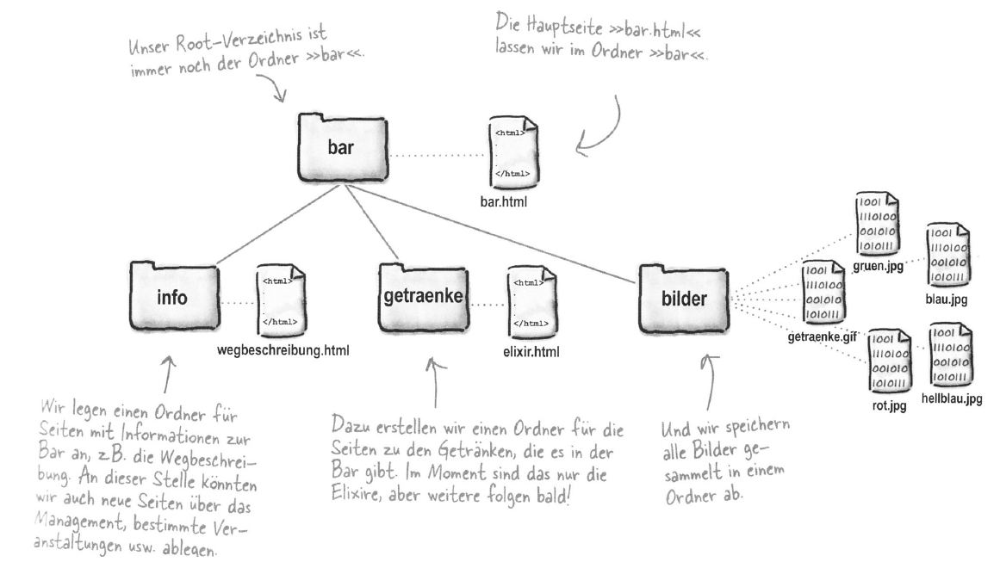

Vorlesung 3 - Thema
 02.11.2020
02.11.2020
Wie auch die letzte Vorlesung begann auch diese mit einem kurzen Teil zu HTML. Dieses mal ging es um Hyperlinks, die sogenannte a-Tags (anchor). Grob zusammengefasst haben wir uns lediglich damit auseinander gesetzt wie Verlinkungen innerhalb Websites funktionieren.
<a href="link adresse">Linktext</a>
Nicht behandelt haben wir jedoch weitere zur Verfügung stehende Argumente des a-Tags. Eines dieser Argumente, dass auch im Kontext dieser Seite sehr oft Anwedung findet ist das target-Argument. Dieses bestimmt wie der Link geöffnet werden soll. So ist es beispielsweise gängige Praxis Links zu fremden Inhalten folgendermaßen zu verlinken:
<a href="google.de" target="_blank">Google</a>
Hier wird beispielsweise auf Google verlinkt und zu diesem Zweck das Target _blank eingesetzt, welches den Link in einem neuen Tab öffnet.
Seiten strukturieren
Da wir nun gelernt hatten wie man zwischen Seiten verlinkt, ging es nun darum eine Website mit Ordnern zu strukturieren. Getestet haben wir all dies an einem kleinen Testprojekt in welchem es um eine Bar ging, die Getränke und Elexire anbietet. Die fertige Ordner Struktur sah anschließend so aus:

Bild aus dem Skript mit der Seitenstruktur (ca. bei Folie 40)
Der interessante Teil
Nun ging es aber zum interessanten Teil - JavaScript.
Das Thema heute waren vor allem die Ähnlichkeiten und Unterschiede zu Java. Das ergibt durchaus Sinn, da wir uns in den ersten beiden Semestern iim Rahmen
der Module Progrmmierung I und Programmierung II bereits intensiv mit Java auseinandergesetzt haben. Den Anfang davon haben wir schon in den ersten beiden Vorlesungen
gesehen. Es geht um Functions.
function meineFunktion(meinParameter){
alert(meinParameter);
}
Diese umfassen das Schlüsselwort function, den Namen der Funktion und eine in Klammern angegebene Liste an Parametern. Hier muss beispielsweise beim Aufruf der Funktion ein Parameter mitgegeben werden, der anschließend mit Hilfe des alert-Befehls wieder ausgegeben wird. Hier trat auch der erste gravierende Unteschied zu Java auf. Und zwar muss man in JavaScript nicht zwingend jeden mitgegebenen Parameter definieren, sondern mit diesen "dynamisch arbeiten". Was das konkret bedeutet würde ich gerne an einem Beipiel zeigen.
function addieren(){
var summe = 0;
for (var i = 0; i < addieren.arguments.length; i++){
summe += addieren.arguments[i];
}
alert(summe);
}
Diese Funktion kann mit beliebig vielen Parametern aufgerufen werden. Die übergebenen Parameter stehen uns anschließend als Array mit dem Namen arguments
zur Verfügung über welches anschließend mit einer for-Schleife iteriert werden kann. In Java musste man dafür mehrere Varianten der gleichen Methode anlegen.
Sonst allerdings war für mich zumindest nicht viel Neues dabei, da sich der Rest überwiegend mit Java deckt. Lediglich eine andere Eigenheit von JavaScript war noch für mich neu.
Und zwar war, dass die Definition globaler Variablen auch innerhalb von Funktionen erfolgen kann. Das kannte ich bis jetzt aus keiner anderen Sprache (weder Java, noch C# oder Pascal).
// globale Variable
var x = 0;
function meineFunktion(){
// lokale Variable
var y = 1;
// weitere globale Variable
z = 5;
}
Hier sieht man ein Beispiel des oben beschriebenen. Augenmerk soll hier auf das Innere der Funktion gelegt werden. Variablen gelten hier als lokal (also nur im Kontext der Funktion gültig)
wenn ihnen das var-Schlüsselwort vorangestellt ist. Variablen ohne dieses Schlüsselwort sind globale Variablen.
Der genaue Sinn dieser Tatsache wurde uns jedoch, zumindest für heute, noch nicht erleutert. Das wird Teil der nächsten Vorlesung.